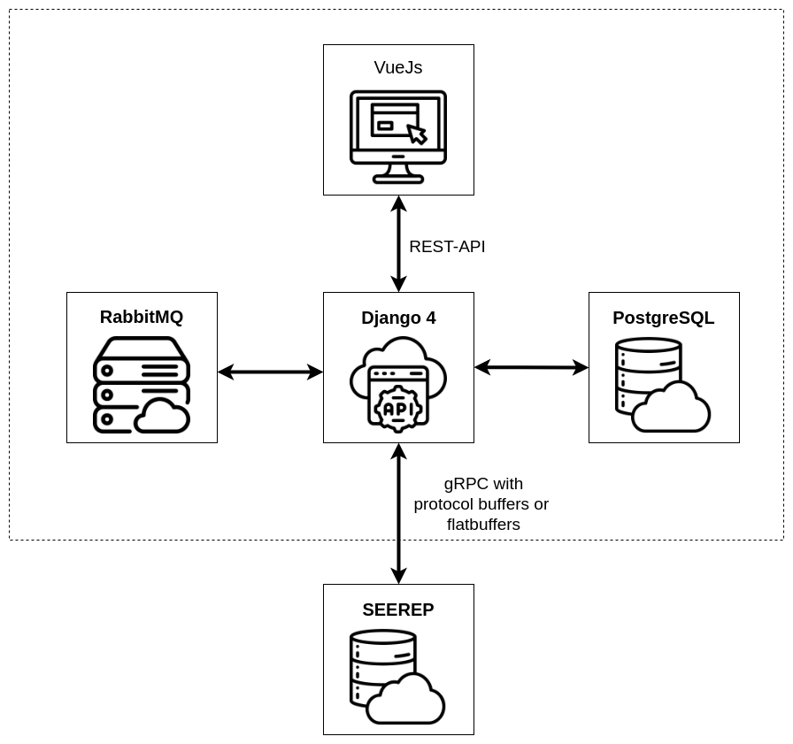
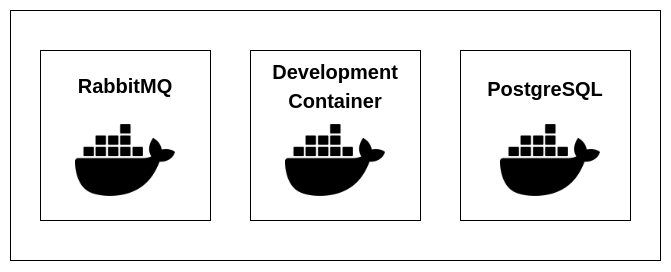

Architecture#
This section provides an overview of the software architecture as well as the Docker setup.
Overview  #
#
This overview should complement the data flow description and goes into more technical detail. The Django 41 server combines all components into a single REST-API, which is then used by the VueJs2 frontend. Django uses gRPC with Protocol Buffers3 to query SEEREP4 for scalar data. Protocol Buffers is a language and platform neutral mechanism for serializing data, developed and open-sourced by Google. It's equivalent to JSON, except it's more efficient and much faster.
Downloading the point clouds from SEEREP every time a request for them is passed to the Django server would take too long for a satisfactory experience, so they are cached locally. For that, Celery5 is used to handle asynchronous tasks using the RabbitMQ6 message broker. Currently the are cached on demand, so when a point cloud isn't present, Celery will download and save it locally. Additionally it would also be possible to download them in predetermined time intervals.
The PostgreSQL7 database is used by Django to store general information like the user data and their access rights. In addition to that, coordinates for the beds are stored so that they can be accurately displayed on a satellite image.

{kind=link}
Docker Setup  #
#
The Digital Logbook is split into three Docker containers. We use a Visual Studio Code development container as a preconfigured development environment. In the development container, often abbreviated to dev-container, developers can work on the Django and VueJs code. The Docker image for that can be downloaded from the GitHub container registry of the repository8. RabbitMQ 3.10.7 and PostgreSQL 14 are the standard images from Docker Hub9.

{kind=link}